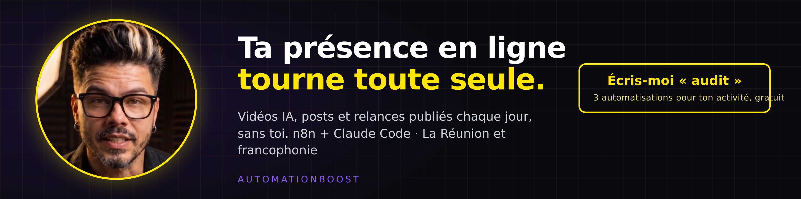

Audit sur 9 points · objectif : des clients · fait avec le skill linkedin-profile-optimizer, à partir de ton positionnement et de ton CV · rien n'est publié
Nom affiché : Payet Tony (le nom de famille en premier — LinkedIn et Google te cherchent comme « Tony Payet »). URL : linkedin.com/in/payet-tony-76695197, le suffixe par défaut. 655 abonnés, 643 relations. Le Tampon, La Réunion.
Titre actuel : « Développeur full stack et expert ia » (36 caractères sur 220).
À propos actuel, en entier : « Je suis à la recherche de mission en free-lance en télétravail et un poste cdd/cdi. » — 87 caractères, et il dit le contraire de ta page : un profil qui cherche un CDI ne vend pas un système d'automatisation à des commerçants.
Sélection : un seul élément, le post vidéo sur la formation (3 réactions). Expériences : cinq postes, descriptions en mots-clés (« scrapping n8n automatisation ecommerce presta shopify wordpress site voyage »), aucun chiffre. Certifications : JavaScript, React. Photo et bannière présentes (à regarder, je ne vois pas les images).
1 · Photo — présente, à vérifier : visage à 60 % du cadre, lumière naturelle, moins de 3 ans.
2 · Bannière — présente, à remplacer par celle ci-dessous (promesse + appel à l'action).
3 · Titre — échec : 36/220 caractères, un intitulé de poste, pas une promesse.
4 · À propos — échec : 87 caractères, message « je cherche un CDI ».
5 · Sélection — faible : 1 élément sur 3.
6 · Expériences — échec : mots-clés sans verbe ni chiffre.
7 · Compétences — à vérifier : épingler n8n, Claude Code, automatisation marketing.
8 · URL — échec : suffixe -76695197 ; réclamer linkedin.com/in/tonypayet (le second lien trouvé dans ton dépôt pointe déjà dessus, vérifie s'il est libre).
9 · Recommandations — à vérifier (Apify ne les renvoie pas).
Ordre des corrections : 1) l'À propos (il contredit tout le reste), 2) le titre, 3) la Sélection avec le lien de rendez-vous, 4) la bannière, 5) l'URL et l'ordre du nom.
J'automatise la présence en ligne des indépendants et des TPE | n8n + Claude Code | Vidéos IA, posts et relances publiés chaque jour sans y penser | 529 workflows en production | La Réunion et francophonie
529 workflows tournent la nuit pendant que je dors. Ils écrivent, montent et publient une vidéo par jour sur cinq réseaux, sans que j'ouvre un logiciel de montage. J'aide les indépendants et les commerçants à exister en ligne sans y passer leurs soirées : le contenu est écrit, filmé avec mon avatar, publié et relancé automatiquement. Ce que ça donne concrètement : un post par jour depuis juillet 2026 sur TikTok, Instagram, YouTube, Facebook et LinkedIn ; 106 sites de démonstration prêts à envoyer aux commerces de La Réunion ; trois sites clients en ligne (immobilier, événementiel, bar à jus). Je ne vends pas un outil. J'installe un système, puis je le fais tourner : n8n pour les enchaînements, Claude Code pour le contenu, Blotato pour la publication. Le setup est ponctuel, la gestion est mensuelle. Avant ça, quatre ans de développement pour un groupe de La Réunion : scraping multi-concurrents pour le voyage, e-commerce, front et back pour Orange Réunion. Trois à quatre heures de sport par jour, non négociables. C'est là que les meilleures automatisations me viennent. Spécialités : automatisation n8n, Claude Code, agents IA, contenu social automatisé, vidéo IA (voix clonée, avatar), capture et relance de leads, sites WordPress et React, SEO local. Tu veux savoir ce qui, chez toi, pourrait tourner tout seul ? Écris-moi « audit » en message, je te réponds avec trois automatisations concrètes pour ton activité.
Accroche avant « voir plus » (265 premiers caractères) : « 529 workflows tournent la nuit pendant que je dors. Ils écrivent, montent et publient une vidéo par jour sur cinq réseaux, sans que j'ouvre un logiciel de montage. J'aide les indépendants et les commerçants à exister en ligne sans y passer leurs soirées ».
1 · Ressource : « Effacer ses données personnelles avec Claude » (automatisationboost.com/ressources/effacer-ses-donnees.html) — la ressource la plus partageable du moment, vignette 1200×627.
2 · Cas client : la refonte Koytcha Immo (site + plugin de recherche sur mesure) ou la vidéo BeFresh — avec un chiffre dans la vignette (délai, nombre de vidéos livrées).
3 · Prise de rendez-vous : ton lien cal.com (tâche « cal-com-rdv » sur ton tableau : il n'existe pas encore, c'est le maillon manquant).
Télécharger la bannière — fond sombre, ton avatar bureau à gauche, promesse en jaune néon, bouton « Écris-moi « audit » ». Le texte est dans les deux tiers droits, comme le demande le skill, pour rester visible sous la photo de profil sur mobile.

Fondateur — AutomatisationBoost (juin 2026 – aujourd'hui, La Réunion ; ton profil dit « Freelance IA », garde « Fondateur »)
· Publie une vidéo par jour sur 5 réseaux depuis juillet 2026 grâce à un système n8n + Claude Code (529 workflows).
· Construit 106 sites de démonstration pour les commerces de La Réunion et livré 3 sites clients.
· Produit des vidéos IA complètes (script, voix clonée, avatar, sous-titres) en moins de 30 minutes chacune.
· Vend une formation en 6 modules notée par défi ; module 1 ouvert à tous jusqu'au 20 septembre 2026.
Compétences : n8n, Claude Code, agents IA, automatisation marketing, vidéo IA, Blotato, SEO local.
Développeur e-commerce et IA — DSI Informatique (groupe Dupuis) (sept. 2022 – avr. 2026)
· Développé un scraper multi-concurrents pour le voyage, qui compare en continu les offres de plusieurs sites.
· Livré les boutiques Dubarry et MyMyFlotte (PrestaShop) et Bourbon Voyages (WordPress).
· Automatisations n8n et premiers agents IA en production.
Compétences : PrestaShop, WordPress, React, n8n, scraping, front/back.
Développeur web — Koytcha Immo (mai 2021 – mai 2022)
· Site immobilier WordPress + React avec un plugin de recherche de biens sur mesure (filtres et résultats développés spécifiquement).
Compétences : WordPress, React, PHP, plugins sur mesure, envoi de SMS.
Développeur web — C2I Réunion (avr. 2019 – déc. 2020)
· Développé le front et le back de projets Orange Réunion (Zend, Symfony, jQuery, Guzzle, PHP).
Développeur web freelance — Outremer Immobilier Réunion (janv. 2018 – avr. 2019)
· Livré un design system et le site Outremer Immobilier, plus le projet Formanoo pour divers clients.
Les dates viennent de ton profil actuel ; les descriptions sont réécrites, à compléter avec un chiffre par poste si tu l'as.
⚠️ Les chiffres viennent du dépôt et de ton CV (529 workflows, 106 démos, 3 sites, 1 vidéo/jour). Si l'un d'eux te paraît faux, dis-le avant de coller.
À Florent (Koytcha) : « Peux-tu écrire deux lignes sur la refonte de koytchaimmo.re, en particulier le plugin de recherche et la façon dont on a traité ta liste de modifications ? »
À BeFresh : « Deux lignes sur les vidéos livrées : ce que ça a changé pour vous en temps et en régularité de publication. »
À un ancien collègue de la DSI : « Deux lignes sur le scraper voyage : le problème qu'il réglait et ce qu'il a changé pour l'équipe. »
Repères du skill : un À propos travaillé fait ×3,9 sur les vues de profil, une Sélection remplie garde le visiteur 30 % plus longtemps, un profil complet convertit 3 à 5 fois mieux qu'un profil « CV ». Le vrai levier chez toi : la Sélection et le lien de rendez-vous, aujourd'hui vides.
Rédigé le 07/09/2026 · skill linkedin-profile-optimizer · à coller sur LinkedIn par toi
{kind=link}